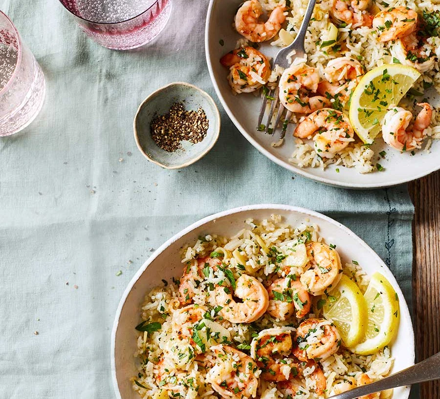

Garlic Prawn Rice

Description
Enjoy our easy prawn and rice dish as a midweek meal. Taking less than 30 minutes to make, it's ideal for weeknights when you want something quick and tasty
Ingredients
- 350g rice
- 4 tbsp olive oil
- 4 garlic cloves, thinly sliced
- 400g prawns, peeled and deveined
- 1 lemon, zested and juiced, plus extra wedges or slices, to serve
- 25g parsley, leaves finely chopped
Steps
- Cook the rice following pack instructions and set aside. Meanwhile, heat 3 tbsp of the olive oil in a pan over a medium heat, then add the garlic and fry for 30 seconds until fragrant. Tip in the prawns and cook until they turn pink and are cooked through, around 2-3 mins on each side.
- Squeeze the lemon juice over the prawns, sprinkle with lemon zest and half the parsley, then stir to combine.
- Add the cooked rice to the pan along with the remaining olive oil. Toss to coat. Cook for 1 min, then season. Remove from the heat, top with the remaining parsley and serve with the extra lemon pieces for squeezing over.